Governo de Goiás · 2024 – 2026
Acesso, identidade e permissões dos sistemas internos do Governo de Goiás reunidos em um único ambiente — a primeira grande aplicação do Informatiza 3.0.
01 — Visão geral
O Portal Goiás é a principal porta de entrada para os sistemas internos do Governo de Goiás. Ele reúne aplicações, serviços de identidade e solicitações de acesso em um único ambiente.
O projeto veio logo depois do Informatiza 3.0 e se tornou sua primeira grande aplicação transversal: se o sistema de design estabelecia uma nova linguagem, o portal seria o produto que a apresentaria a usuários de diferentes órgãos do Estado.
02 — Desafio
Funções essenciais estavam espalhadas entre sistemas antigos e experiências pouco integradas. O portal existente vinha de uma fase anterior do governo e já não acompanhava as necessidades dos usuários.
Recuperar a senha, atualizar o contato, acessar aplicações e gerenciar permissões eram jornadas separadas. O desafio era reuni-las sem criar uma solução inviável para o prazo e para a capacidade da equipe — e manter tudo simples para quem só precisava encontrar uma aplicação, atualizar seus dados ou pedir um acesso.
03 — Meu papel
O Product Owner trouxe a demanda inicial; eu conduzi a definição do que o Portal Goiás poderia se tornar. Pesquisei o contexto, entendi as necessidades dos usuários, propus caminhos para o produto e delimitei um escopo compatível com os prazos.
Em vez de só redesenhar o portal, organizei uma visão para centralizar funções que já existiam no governo, mas estavam distribuídas em lugares diferentes — equilibrando expectativas institucionais, requisitos técnicos e experiência do usuário.
04 — Contribuições
05 — A experiência
Um único login com usuário e senha, ID Goiás ou gov.br. Quando outra aplicação pede dados do servidor, a tela de consentimento mostra exatamente o que será compartilhado.
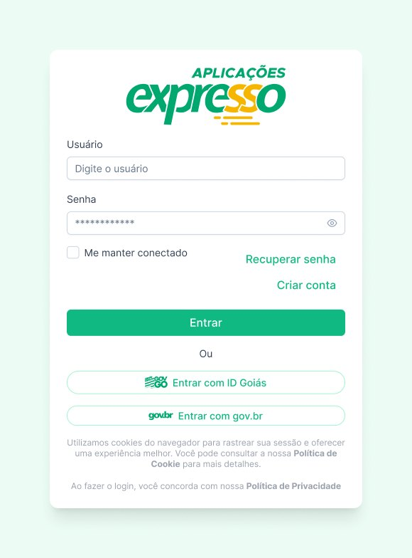
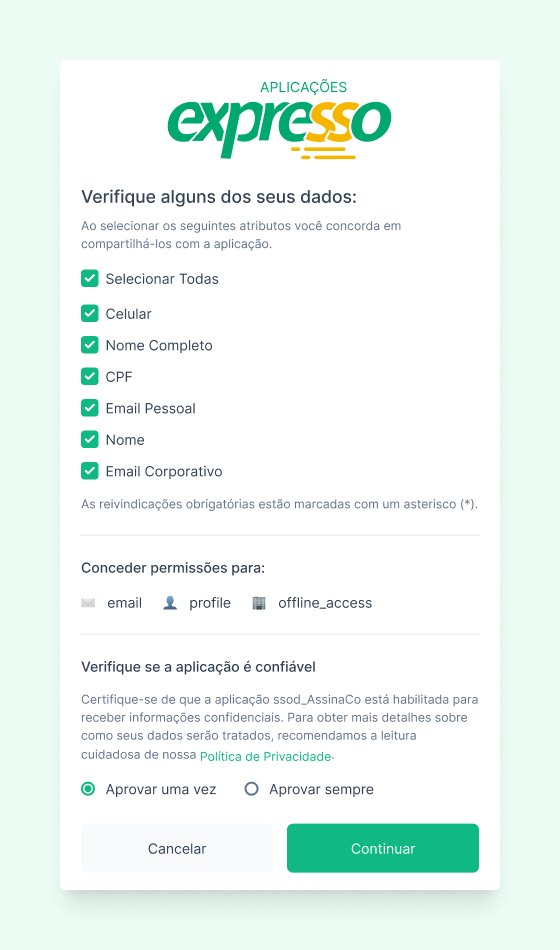
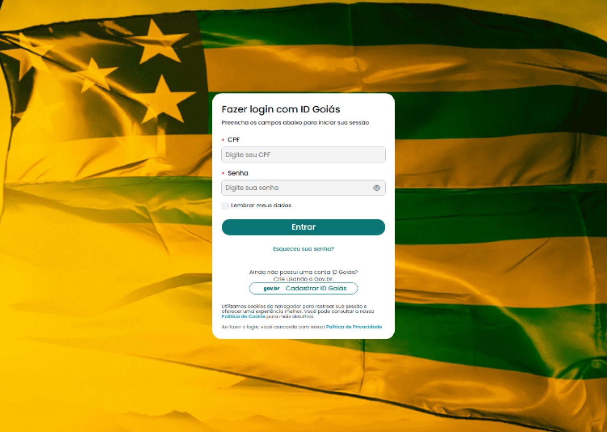
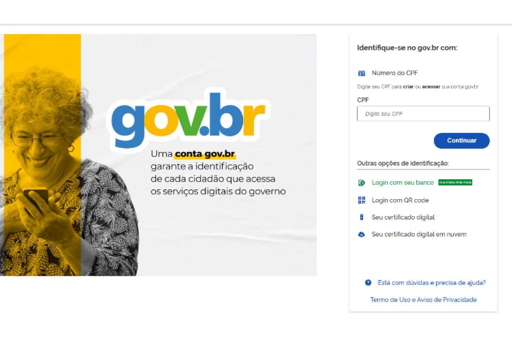
A home reúne os sistemas que o servidor pode acessar, cada um com descrição e área responsável. A busca encontra qualquer sistema, e as notificações avisam quando um novo acesso é liberado.
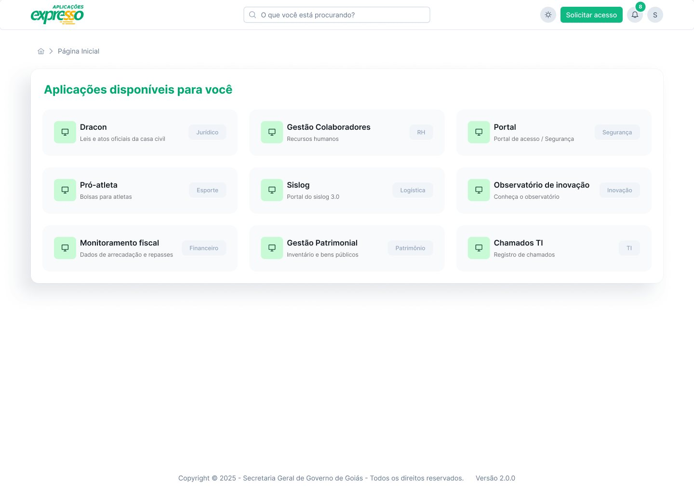
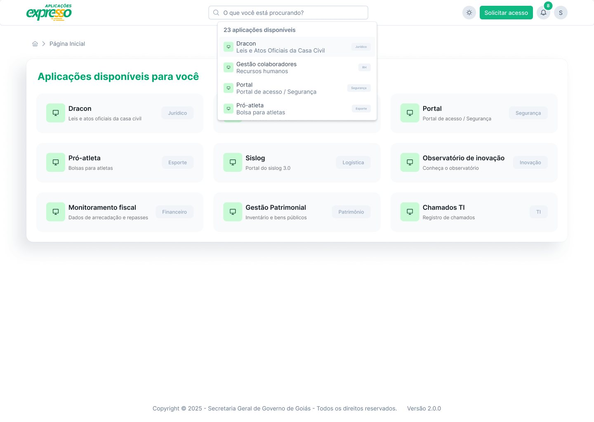
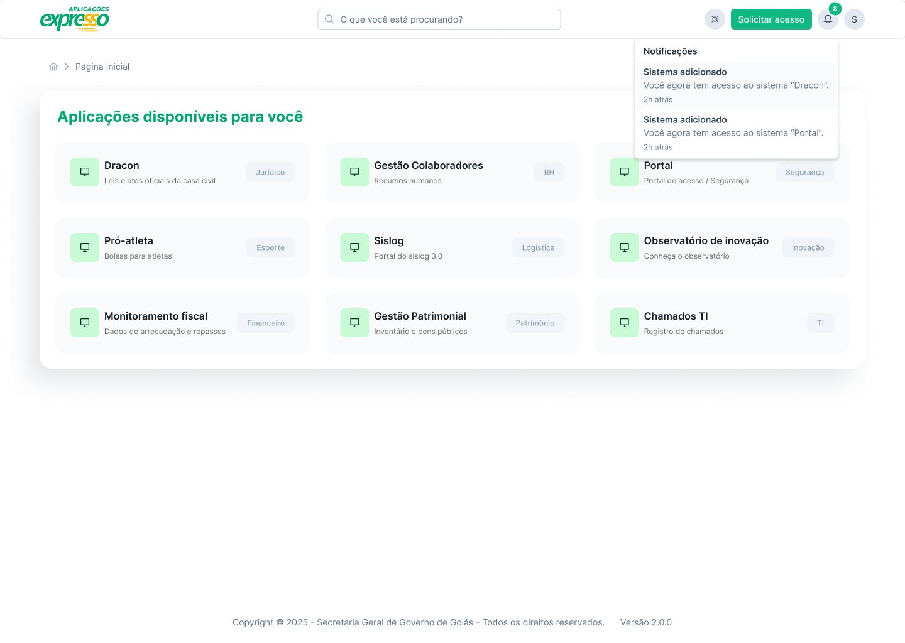
Pedir acesso a um sistema virou um formulário curto, com justificativa, e cada pedido pode ser acompanhado — aprovado, recusado ou pendente. Senha e dados de contato também são atualizados pelo próprio servidor.
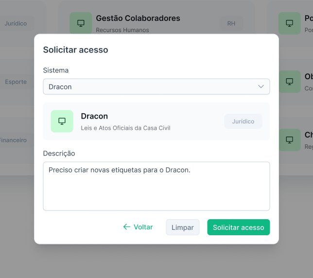
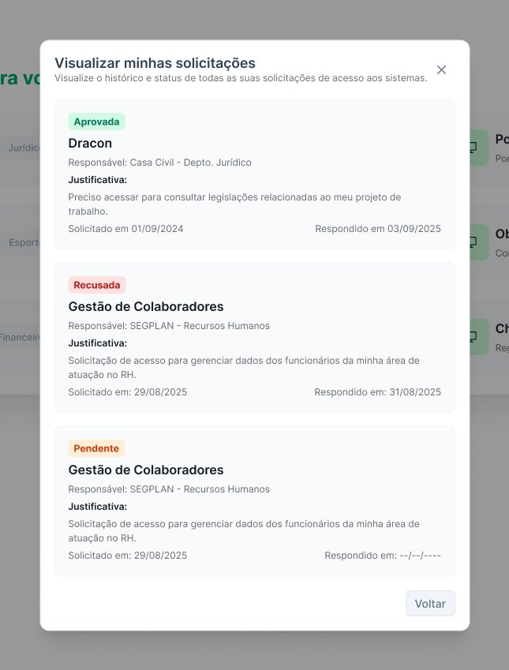
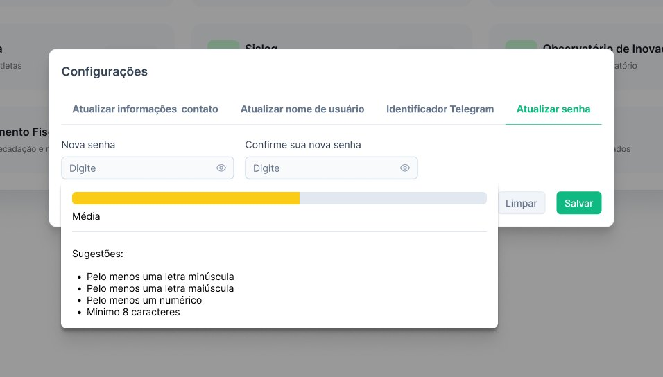
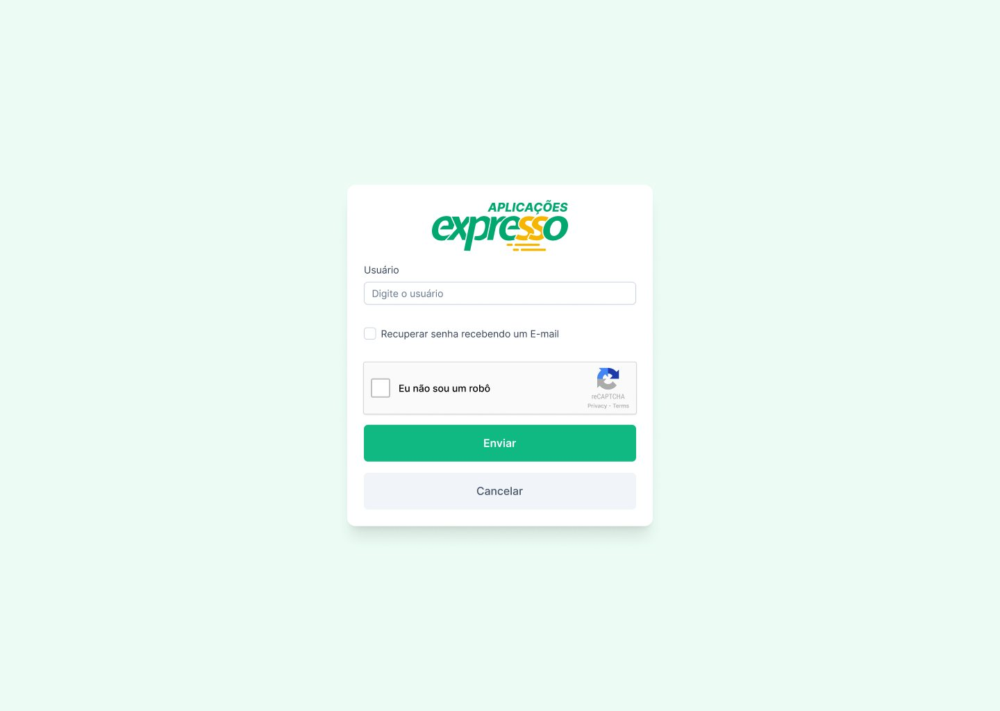
06 — Resultados
O Portal Goiás transformou o Informatiza 3.0 em uma experiência concreta: organizou o acesso ao ecossistema digital do Estado em torno de uma identidade e de uma jornada comuns.